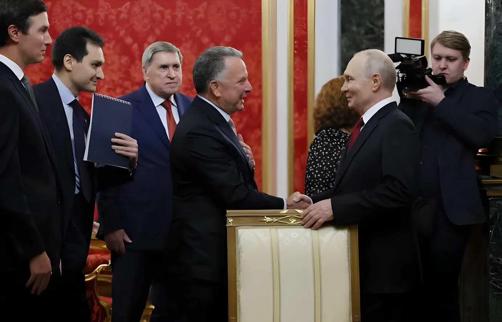

Le week-end du 5 au 6 septembre 2026, les envoyés spéciaux de Donald Trump, Steve Witkoff et Jared Kushner, se sont d'abord entretenus trois heures avec Vladimir Poutine à Moscou, avant de se rendre pour la première fois à Kiev afin d'y rencontrer Volodymyr Zelensky. Une double séquence diplomatique inédite, porteuse selon la Maison-Blanche de « plans substantiels » pour mettre fin à la guerre déclenchée par l'invasion russe de février 2022, mais qui s'est déroulée sur fond de nouvelles frappes russes.
Samedi 5 septembre 2026, Jared Kushner, gendre du président américain, et Steve Witkoff, homme d'affaires devenu émissaire spécial, atterrissent peu avant 13 heures (heure locale) à l'aéroport moscovite de Vnoukovo. Ils y sont accueillis par Kirill Dmitriev, l'envoyé du Kremlin pour les questions économiques, selon les agences de presse russes TASS et Ria Novosti. Le porte-parole du Kremlin, Dmitri Peskov, confirme dans la journée que Vladimir Poutine recevra ses deux hôtes.
L'entretien avec le président russe se tient à huis clos, dans sa résidence officielle, à partir de 20 heures, et dure environ trois heures, selon les médias d'État russes. Une vidéo diffusée par ces mêmes médias montre Vladimir Poutine déclarant à ses interlocuteurs américains : « La situation n'est bien sûr pas simple. »
« La situation n'est bien sûr pas simple. »
— Vladimir Poutine, cité par les médias d'État russes, 5 septembre 2026Deux aéroports de Kiev sont frappés par des bombardements russes ; Volodymyr Zelensky y voit une tentative du Kremlin de perturber la visite annoncée des émissaires américains.
Witkoff et Kushner atterrissent à Vnoukovo (Moscou), accueillis par Kirill Dmitriev.
Début de l'entretien à huis clos avec Vladimir Poutine, qui durera environ trois heures.
Nouvelle attaque russe de drones et de missiles contre l'Ukraine ; l'armée de l'air ukrainienne fait état d'une dizaine de sites touchés.
Witkoff et Kushner arrivent par avion à Kiev, une première depuis le début de leur mission de médiation, et rencontrent Volodymyr Zelensky.
Pour accompagner cette double visite, Vladimir Poutine ordonne une cessation des frappes sur Kiev pendant trois jours, du samedi au lundi inclus, annonce le Kremlin. Volodymyr Zelensky répond en annonçant à son tour un arrêt des attaques ukrainiennes visant Moscou pour la même période. Ce geste réciproque reste toutefois partiel : dans la nuit précédant l'arrivée des émissaires à Moscou, deux aéroports de la capitale ukrainienne sont frappés, et la nuit suivante, la Russie lance de nouveau des drones et des missiles contre plusieurs régions du pays, touchant une dizaine de localités selon Kiev.
| Camp | Engagement | Durée |
|---|---|---|
| Russie | Suspension des frappes sur Kiev | Sam. → lun. inclus |
| Ukraine | Suspension des frappes sur Moscou | Sam. → lun. inclus |
| Russie | Frappes sur les aéroports de Kiev | Nuit du 4 au 5 sept. |
| Russie | Attaque de drones et missiles | Nuit du 5 au 6 sept. |
Dimanche 6 septembre, Steve Witkoff et Jared Kushner entament leurs échanges avec Volodymyr Zelensky. Avant la rencontre, le président ukrainien écrit sur les réseaux sociaux que l'Ukraine « restera constructive » et que ses propositions sont « prêtes ». Une fois les discussions engagées, il publie un message plus bref : « Nous avons entamé les discussions. » Steve Witkoff qualifie de son côté les premiers échanges de « significatifs », tandis que la Maison-Blanche évoque des « plans substantiels » abordés la veille avec Vladimir Poutine. Des représentants de la France, de l'Allemagne et du Royaume-Uni se joignent également aux discussions à Kiev ce dimanche.
« Nous avons entamé les discussions. »
— Volodymyr Zelensky, sur les réseaux sociaux, 6 septembre 2026Depuis son retour à la Maison-Blanche début 2025, Donald Trump a engagé plusieurs cycles de discussions pour tenter de mettre fin au conflit le plus meurtrier en Europe depuis la Seconde Guerre mondiale, déclenché par l'invasion russe de l'Ukraine le 24 février 2022. Aucune de ces tentatives n'avait, jusqu'à cette double visite, débouché sur une avancée tangible. Avant le départ de ses émissaires, le président américain s'était borné à indiquer : « Nous avons une idée pour la paix », sans préciser si la proposition impliquait une cession de territoire de la part de l'Ukraine.
Trois heures de tête-à-tête au Kremlin, une trêve de courtoisie aussitôt écornée par de nouvelles frappes, puis une première incursion des émissaires américains dans le ciel de Kiev : ce week-end diplomatique ressemble moins à une percée qu'à une mise en scène soigneusement chorégraphiée par les trois capitales. Chacune y trouve un bénéfice immédiat — Moscou affiche son ouverture sans rien céder publiquement, Kiev obtient enfin une visite en personne après des mois de médiation à distance, Washington peut se prévaloir d'avoir fait bouger les lignes. Mais la persistance des frappes pendant la trêve même rappelle que la guerre continue de dicter son propre calendrier, et que la présence, pour la première fois, de la France, de l'Allemagne et du Royaume-Uni autour de la table à Kiev suggère que la suite de ce dossier ne se jouera plus seulement entre Washington, Moscou et Kiev.
Over the weekend of September 5-6, 2026, Donald Trump's special envoys, Steve Witkoff and Jared Kushner, first held a three-hour meeting with Vladimir Putin in Moscow before travelling to Kyiv for the first time to meet Volodymyr Zelensky. This unprecedented two-stop diplomatic sequence was said by the White House to involve "substantial plans" to end the war triggered by Russia's February 2022 invasion — even as fresh Russian strikes continued around it.
On Saturday, September 5, 2026, Jared Kushner, the US president's son-in-law, and Steve Witkoff, a businessman turned special envoy, landed shortly before 1 p.m. local time at Moscow's Vnukovo airport. They were greeted by Kirill Dmitriev, the Kremlin's envoy for economic affairs, according to the Russian news agencies TASS and Ria Novosti. Kremlin spokesman Dmitry Peskov confirmed during the day that Vladimir Putin would receive the two envoys.
The meeting with the Russian president was held behind closed doors at his official residence, starting at 8 p.m., and lasted around three hours, according to Russian state media. Footage broadcast by those outlets showed Vladimir Putin telling his American visitors: "The situation is of course not simple."
"The situation is of course not simple."
— Vladimir Putin, quoted by Russian state media, September 5, 2026Two Kyiv airports are hit by Russian strikes; Volodymyr Zelensky sees it as a Kremlin attempt to disrupt the envoys' planned visit.
Witkoff and Kushner land at Vnukovo (Moscow), welcomed by Kirill Dmitriev.
The closed-door meeting with Vladimir Putin begins; it will last about three hours.
Russia launches a fresh drone and missile attack on Ukraine; the Ukrainian air force reports about a dozen sites hit.
Witkoff and Kushner fly into Kyiv — a first since their mediation effort began — and meet Volodymyr Zelensky.
To accompany the two-stop visit, Vladimir Putin ordered a halt to strikes on Kyiv for three days, from Saturday through Monday, the Kremlin announced. Volodymyr Zelensky responded by announcing a matching halt to Ukrainian strikes on Moscow over the same period. The reciprocal gesture nonetheless remained partial: the night before the envoys reached Moscow, two Kyiv airports were struck, and the following night Russia again launched drones and missiles at several regions of the country, hitting roughly a dozen locations according to Kyiv.
| Side | Commitment | Duration |
|---|---|---|
| Russia | Halt strikes on Kyiv | Sat. → Mon. incl. |
| Ukraine | Halt strikes on Moscow | Sat. → Mon. incl. |
| Russia | Strikes on Kyiv airports | Night of Sept. 4-5 |
| Russia | Drone and missile attack | Night of Sept. 5-6 |
On Sunday, September 6, Steve Witkoff and Jared Kushner began their talks with Volodymyr Zelensky. Ahead of the meeting, the Ukrainian president wrote on social media that Ukraine would "remain constructive" and that its proposals were "ready." Once the talks were underway, he posted a shorter message: "We began talks." Steve Witkoff, for his part, described the initial exchanges as "substantive," while the White House referred to "substantial plans" discussed with Vladimir Putin the day before. Representatives from France, Germany and the United Kingdom also joined the Kyiv talks that Sunday.
"We began talks."
— Volodymyr Zelensky, on social media, September 6, 2026Since returning to the White House in early 2025, Donald Trump has launched several rounds of talks aimed at ending the deadliest war in Europe since the Second World War, triggered by Russia's invasion of Ukraine on February 24, 2022. Until this two-stop visit, none of those attempts had produced a tangible breakthrough. Before his envoys departed, the US president had only said: "We have an idea for peace," without specifying whether the proposal involved a territorial concession by Ukraine.
Three hours face to face at the Kremlin, a courtesy truce almost immediately dented by fresh strikes, then the US envoys' first-ever foray into Kyiv's skies: this diplomatic weekend looks less like a breakthrough than a carefully choreographed sequence staged by all three capitals. Each draws an immediate benefit — Moscow signals openness without publicly conceding anything, Kyiv finally secures an in-person visit after months of remote mediation, and Washington can claim to have moved the dial. Yet the strikes that continued through the very days of the truce are a reminder that the war still sets its own calendar, and the presence, for the first time, of France, Germany and the United Kingdom around the table in Kyiv suggests the next chapter of this file will no longer be written by Washington, Moscow and Kyiv alone.